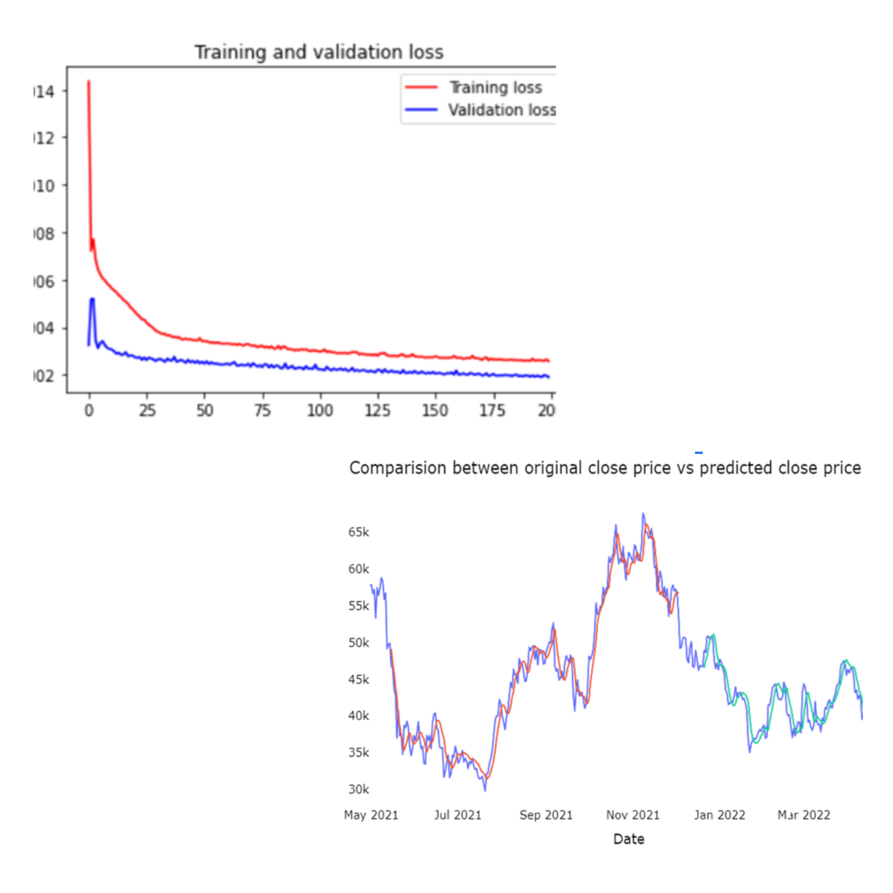
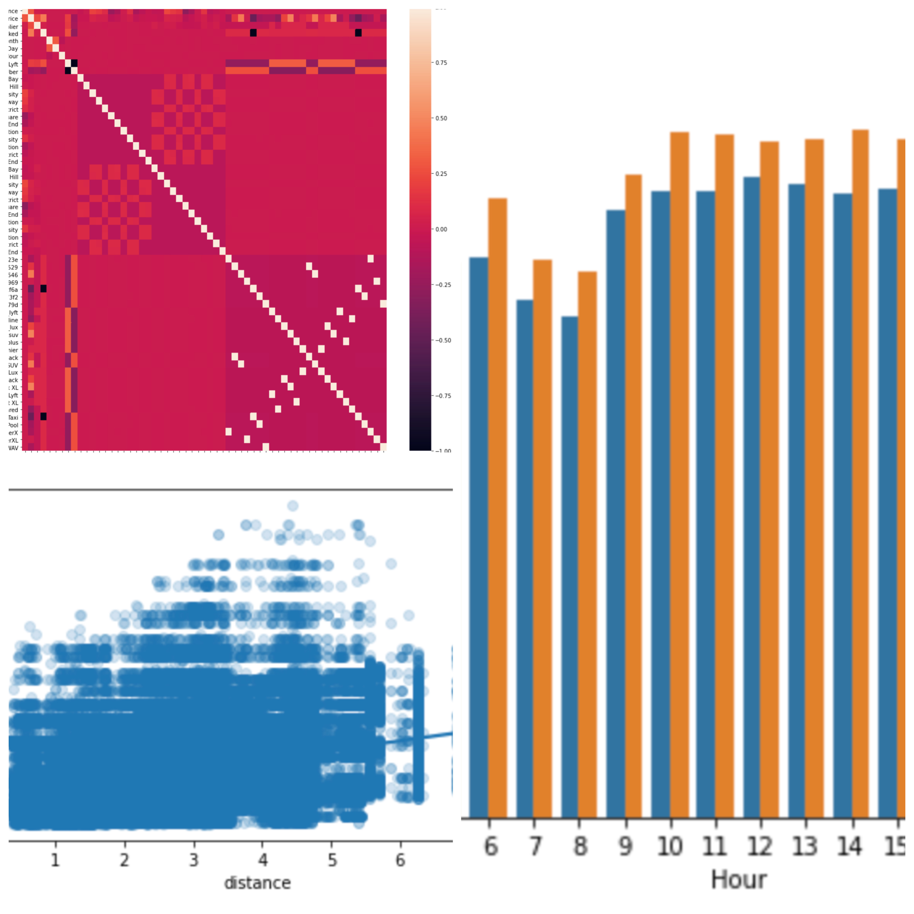
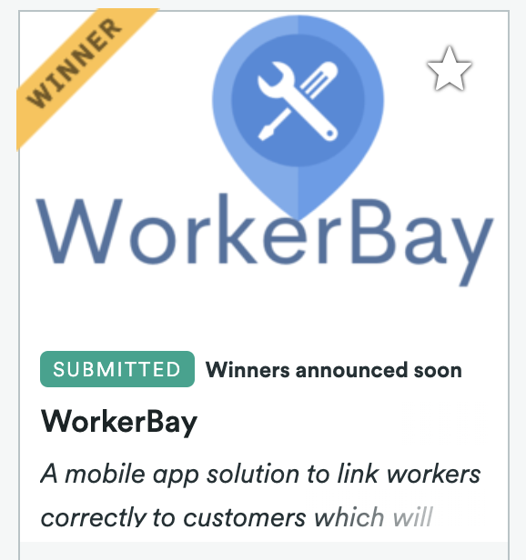

|
Anisha Singh
I am an undergraduate student who is interested in the general area of reinforcement learning. My
research interests include Autonomous (cyber, physical and human) systems, HCI, Machine learning and
Information fusion. During summers, I spent few months working at Microsoft. I was also a visiting
research scholar at UoW, Canada, where I worked on Driver Monitoring Systems. I am also a Flutter
developer with good knowledge of algortithms, logic, programming, and its implementations.
Besides research and programming, I enjoy painting, watching sports and playing video games.
Email /
GitHub /
LinkedIn
|
|
News
Projects and Research Work
|

|
Cryptocurrency Prediction Model using Machine Learning
Anisha Singh, Aastha Khandelwal, Ananya Singh
Junior Year Final Projectn2022
(Random Forests, LSTM(RNN), Tenserflow)
[
Report
/
Slides
]
Developed a system to analyse and predict the price of bitcoins using machine learning algorithms.
Achieved an accuracy of 97% using LSTM and 98.43% using Random Forests.
|
|

|
Cab Ride Price Prediction
Anisha Singh
Personal Project
[
Code]
(Random forests, Linear Regression, Support Vector Machines)
Analysed the price and surge multiplier for the rides. Achieved an accuracy of 97% using Random
Forests with AdaBoost.
|
|

|
WorkerBay - Flutter Application
Swatilekha Roy, Chehak Agrawal, Anisha Singh Saloni Gupta, Sruthika
Submitted to Backyard Hacks 2.0 and ShellHacks
[
Code]
Winner in Backyard Hacks 2.0. (Figma, Flutter, Node.js, repl.it, Heroku, Postman, Github)
WorkerBay accepts the user details of both customers and workers, also asking for registration IDs,
cost, etc. of the worker so as to make sure all details are valid.
Worker may add and edit his availability on his work calendar, from his profile which will be stored
in our database.
Customer can log into the app using their details and search for workers based on a filter system,
namely date required, price range, ratings, etc.
Customer can then book an order with the worker which will send notifications to both parties.
Post-completion of service request, both workers and customers can rate each other which will serve
as good testimonial for future requests.
At any time during the request, both worker and customer can report each other for misconduct or
breach of terms.
|
|
{kind=link}